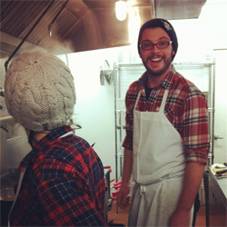

-

Grace Crossman
Executive Chef/Printmaker
A native of Spring Lake Heights, Crossman studied
comparative literature in college, writing her senior
thesis on Dante’s La Vita Nuova in relation to
medieval monastic scribal practice and Freudian
memory theory. She admits it was “very weird.”
That’s why we love her. -
Mark Hinchliffe
Writer/Illustrator
Hinchliffe grew up in Rhode Island, the only child
of an English teacher and a mechanical engineer.
Among other things, he has been a waiter, a mail
sorter, a research analyst, and a vegan chef. He is
currently at work on his first novel and tattoo.
-
Andrew Holtz
Photographer
"I love photographing strangers. The most difficult
part of photographing people is connecting with
them so you're able to capture what makes them
tick. There's something exciting about pulling that
personality out of someone you don't know. It's a
great opportunity to be inspired by their stories." -

Paul Holzheimer
Executive Chef
A staunch advocate of handshakes, ketchup, and
Pomeranians named Gus, you can usually find
Holzheimer in the kitchen wearing corduroys and
something plaid. He excels at boiling water
and breathing oxygen.
-
Michael Johnson
Oven Cook/Artist
MJ studied filmmaking for two years at SVA
before earning an English degree from Rutgers.
For a little over a year he worked on Porta's ovens,
engaging in strange staredowns, philosophical
musings, and the ever so intimate small talk. In
2012, MJ finally decided to leave to focus on
reading, writing and painting. -
Fredrica Vilardi
Head Pizzaiola/Creative Director
Born and raised in New Jersey, Vilardi has traveled
the world for inspiration. From photography
school in Paris, to safaris in South Africa, to hiking
in Peru, she throws her life into her commitments.
Her band, Razor Blazers, recently completed a
successful Kickstarter campaign to fund its
first release.
-
Nick Villapiano
Barista/Web Developer
Born in Boston, Villapiano's allegiances reside with
the Yankees and wearers of short shorts and bow
ties. He's a fan of many things: sci-fi, digital
watches, fresh juice, tea, bike rides. The list goes on.
This paragraph does not. -
Adam Worth
DJ/TV Producer
You all know the man behind the music at Porta.
His Saturday night dance parties are already the
stuff of legend. But in his storied past, Worth has
also managed a record label, videotaped cheating
spouses for a private investigator, driven an ice
cream truck, hosted a radio show, and worked as
a chauffeur for a high-class escort service. Kid's
got skills.
-
Brian Wrensen
Designer
A man as well known for his eating habits (edamame and French fry lunches) as for his love of hockey, Wrensen holds true to his blue collar work ethic while staring at a computer all day long. He'll be the first to tell you how great space exploration is and the last to try a strange vegetable.